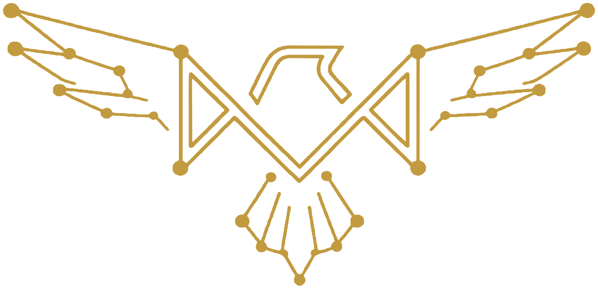

اسحب ملفات Word أو PDF أو الصق الأسئلة مباشرة. كل المعالجة بتتم داخل متصفحك بنسبة 100% بدون أي سيرفر خارجي.
يدعم ملفات Word (.docx), PDF (.pdf), ملفات نصية (.txt, .md), وصور الأسئلة (.png, .jpg)
بيفهم 1- Q1. 1) وخيارات
a) A. أ) ب) ج) د) وعناوين المواد زي
Physiology Qs أو # Anatomy. لو نسخت من Word والإجابات باللون الأحمر هتتعرف فورًا تلقائيًا.
لو الإجابات في ملف منفصل الصق المفتاح هنا بصيغة 1-B 2-C أو 1. b.
أوراقك جاهزة بتنسيق A4 بدقة عالية. حمّل الملف المباشر بنقرة واحدة، أو استخدم نافذة الطباعة.
هل أنت متأكد من تنفيذ هذا الإجراء؟
اسحب أي ملف Word (.docx) أو PDF أو الصق النص عادي. البرنامج بيفهم الترقيم والخيارات تلقائيًا، وبيتعرف على الإجابات الحمرا بنفسه.
لو فيه سؤال بدون إجابة أو متكرر، هيظهرلك كارت بملاحظة وتقدر تحدد الإجابة الصح بضغطة زرار واحدة.
اضغط "تحميل ورقة الأسئلة مباشر" أو "تحميل ورقة الإجابات مباشر" بنقرة واحدة بدون حوارات إضافية.